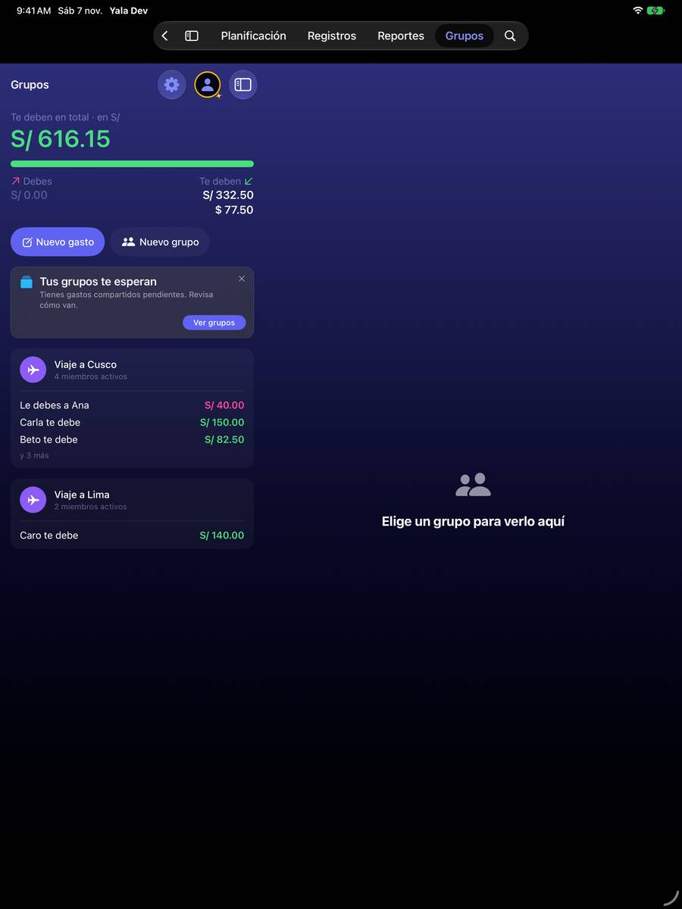
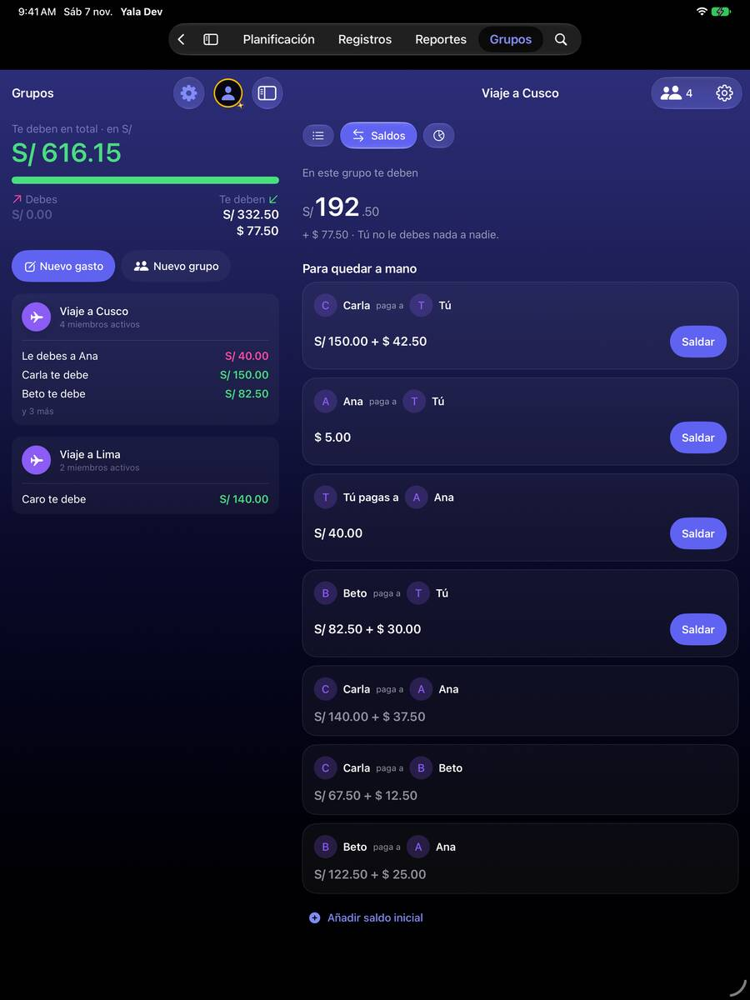
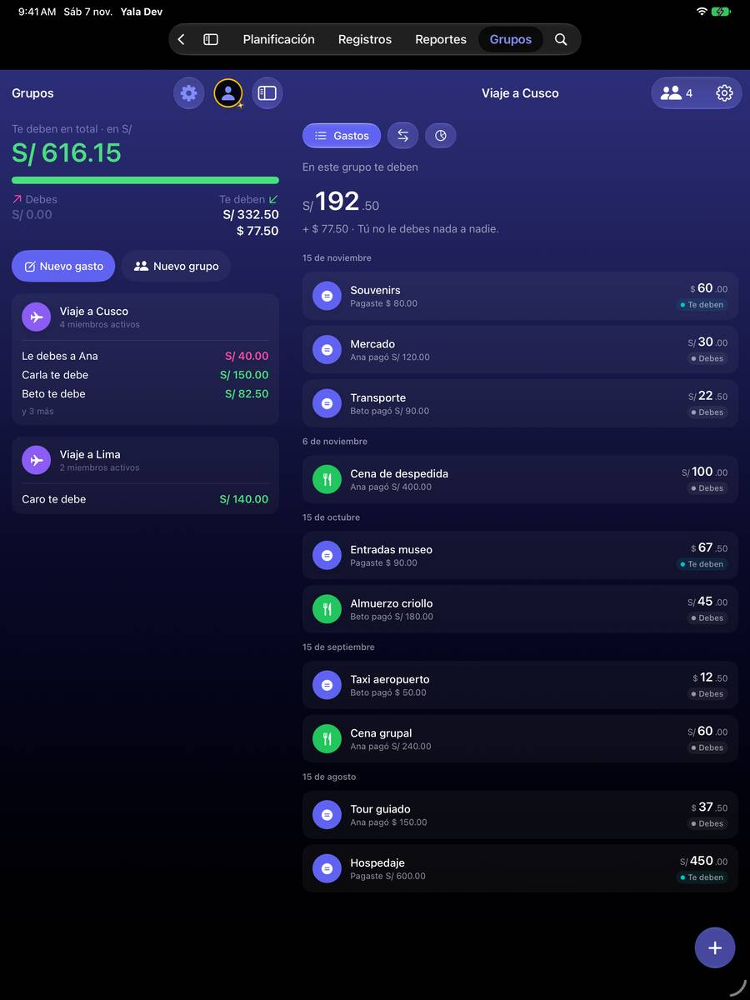
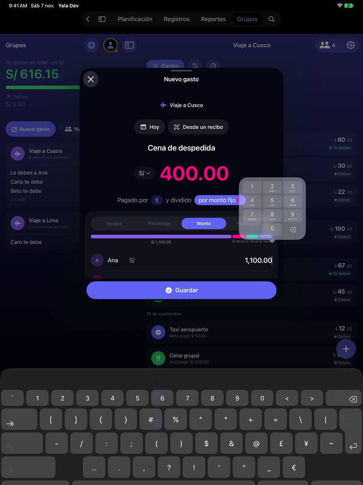

En el iPad el grupo se estira de lado a lado y el reparto se ve fila a fila
Hoy
Capturas del simulador (app de origin/2.3, semillas de prueba). Pasos hoy: Mismos toques que en el iPhone; la lectura cruza la pantalla.




De dónde sale
- Captura Capturas iPad 10, 13 y 16 (iPad Pro 13, vertical): gastos, saldos y estadísticas a todo lo ancho.
- Captura Captura iPad 65: con el teclado, una fila del reparto visible.
- Código Sin
readableWidthni ancho máximo enGroupDetailView,GroupRecordsViewyGroupBalancesView(solomaxWidth: .infinity); la regla de la casa pideDS.Adaptive.readableWidthen el contenido de una columna de detalle (.claude/rules/swiftui-ds.md).
Las opciones
De 3 a 5 alternativas con el mismo caso. Desliza cada recorrido; el anillo cian marca dónde toca Lucía.
Ancho legible en el detalle del grupo
El contenido del detalle se limita al ancho legible de la app (700 pt) y se centra en su columna, como pide la regla del iPad. «Saldar» queda junto a su importe y las filas de gasto no cruzan la pantalla.
Viaje a Cusco
A favor
- Lo pide la regla de la casa para columnas de detalle (
DS.Adaptive.readableWidth). - Un modificador por pantalla.
En contra
- En un iPad de 13 pulgadas sobra espacio a los lados.
Gastos y Saldos lado a lado en el iPad
En ancho, el detalle enseña dos columnas: los gastos a la izquierda y los saldos a la derecha, siempre a la vista. Los chips desaparecen en el iPad; Estadísticas va como botón.
Viaje a Cusco
A favor
- Aprovecha el iPad para lo que más se mira en un viaje.
- Apuntar un gasto y ver el saldo cambiar, sin tocar nada.
En contra
- Otra maquetación del detalle para el iPad.
- Con texto grande no caben dos columnas: hay que volver a una.
«Nuevo gasto» a pantalla de página en el iPad
En el iPad, «Nuevo gasto» se abre con el tamaño de página (como Ajustes), no en la ficha pequeña de hoy, para que con el teclado sigan viéndose el importe y todo el reparto.
A favor
- El reparto deja de verse fila a fila.
- Ya existe el tamaño (
.presentationSizing(.page)en Ajustes).
En contra
- En el iPad pequeño, en vertical, cambia poco.
Lado a lado
La última pantalla de cada recorrido, frente a hoy.
Viaje a Cusco
Viaje a Cusco
Comparación
| Opción | Pasos para el caso (maqueta) | Esfuerzo | Riesgo | Reabre |
|---|---|---|---|---|
| Hoy | Mismos toques que en el iPhone; la lectura cruza la pantalla. | — | — | — |
| H1 · Ancho legible en el detalle del grupo | Igual que hoy | bajo | bajo | — |
| H2 · Gastos y Saldos lado a lado en el iPad | 0 toques para ver saldos (hoy, 1) | medio | medio | — |
| H3 · «Nuevo gasto» a pantalla de página en el iPad | Igual que hoy | bajo | bajo | — |
Lente de perfiles
Perfiles simulados, no entrevistas Los siete perfiles de la revisión del usuario nuevo, usados como lentes. riesgo alto de trabarse · medio · bajo.
| Perfil | Hoy | H1 | H2 | H3 |
|---|---|---|---|---|
| P1 · Migrante de Excel | — | — | su tabla al lado | — |
| P2 · Principiante abrumado | — | — | — | — |
| P3 · Anotador rápido que no lee | — | — | — | — |
| P4 · Experto de otra app (Splitwise, Tricount) | — | — | — | — |
| P5 · Llega por una invitación de grupo | — | — | — | — |
| P6 · Varias monedas y tarjeta | — | — | — | — |
| P7 · Texto grande, a veces en iPad | lee de borde a borde | lee sin mover la cabeza | dos columnas con AX | ve todo |
Recomendación: H1
H1 + H3 son la regla de la casa aplicada a Grupos y cuestan poco. H2 aprovecha mejor el iPad, pero es otra maquetación del detalle y conviene decidirla cuando haya más uso de Grupos en iPad.
Qué decide Jürgen
- ¿Ancho legible en el detalle (H1) y «Nuevo gasto» a tamaño de página en el iPad (H3)?
- ¿Gastos y Saldos lado a lado en el iPad (H2), ahora o más adelante?
Revisión por vistas 2.3 · Grupos. Maquetas en HTML con datos ficticios: no son la app. Pasos contados sobre las maquetas; los de «Hoy», en el simulador o en el código citado.